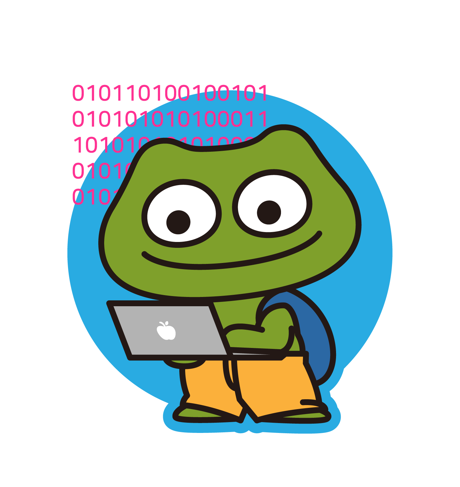

보이지 않는 것을 보는 당신은!
백엔드 개발자

나와 맞는 개발 유형은 백엔드 개발자?!
-
"어떤 일이든 안정적인 것이 우선임. 밴드 활동을 한다면, 화려한
보컬보다는 안정적인 연주를 이끌어나가는 베이스와 드럼을 맡는 편."
-
"주로 데이터를 다루는 데에 관심이 있음. 시각적으로 디자인을 하는
것에는 관심이 없고 귀찮음."
-
"논리적인 사고를 하는 것을 즐기는 스타일으로 추리소설, 방탈출 게임
등을 좋아하고 어려운 문제를 해결하는데 성취감을 느낌."
-
"효율적인 거 너무 좋아 최고야...! 목적지에 갈 때도 최단 경로
알아내서 그 길로 가는 편. 지하철 탈 때 아무 데서나 서 있지 않음.
빠른 환승 구역 앞에 서 있어야 마음이 안정됨."